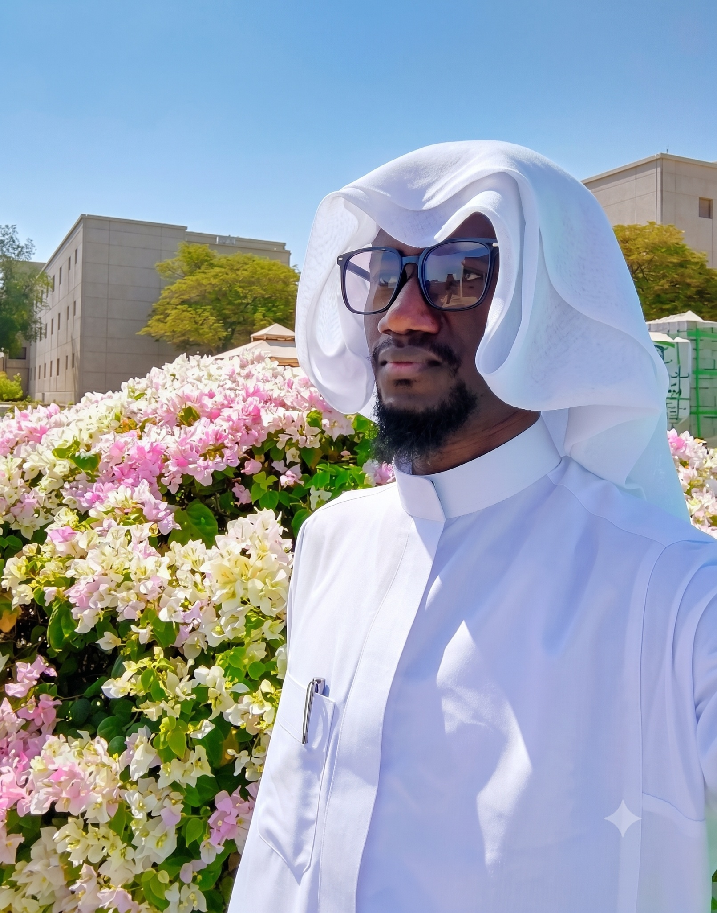

About Me
I am a Life Scientist and Biochemist with Master of Science in Life Sciences at King Fahd University of Petroleum and Minerals (KFUPM), Saudi Arabia, where my research focuses on microbiology, molecular biology, antimicrobial resistance, and nanotechnology-based therapeutic strategies. I am passionate about translating scientific discoveries into practical healthcare solutions that create meaningful impact.
Originally from Tamale, the capital city of Northern Ghana, my academic journey has been shaped by curiosity, perseverance, and a strong commitment to scientific discovery. I received my basic education at the Anbariya Islamic Institute (2005-2014), one of Tamale's well-respected educational institutions, before pursuing General Science at Tamale Business Senior High School (2014-2017). These formative years laid the foundation for my interest in the life sciences and inspired me to pursue a career dedicated to research and innovation.
I later earned a Bachelor of Science in Biochemistry (2018-2022) from the University for Development Studies (UDS), Navrongo Campus-now the University of Technology and Applied Sciences (UTAS). Following graduation, I served as a Teaching and Research Assistant at the School of Pharmacy and Pharmaceutical Sciences (2022-2023) on the university's Tamale Campus during my national service. This experience strengthened my passion for scientific research, mentoring students, and contributing to academic excellence.
Driven by the ambition to expand my research expertise, I was awarded a fully funded international scholarship to pursue graduate studies at KFUPM in Saudi Arabia. After successfully defending my master's thesis, I am currently completing the final administrative requirements for graduation while preparing for the next stage of my academic career.
Beyond biomedical research, I have a strong interest in artificial intelligence, digital innovation, and entrepreneurship. I develop AI-powered solutions that support scientific research, education, healthcare, and the digital transformation of small businesses into sustainable enterprises capable of creating employment and driving economic development. I believe that combining life sciences with emerging technologies offers tremendous opportunities to solve complex real-world challenges.
My long-term goal is to pursue doctoral research in my area of specialization while developing innovative technologies that bridge scientific discovery, artificial intelligence, and societal impact. Beyond advancing global health through interdisciplinary research and meaningful collaborations, I aspire to contribute to the economic transformation of my hometown, Tamale, by empowering and connecting small businesses into thriving enterprises, industries, and manufacturing hubs that create sustainable employment, foster innovation, and drive regional development. Through science, innovation, and entrepreneurship, I hope to help build resilient communities locally while contributing practical solutions to global challenges.